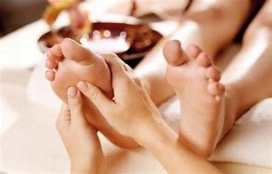
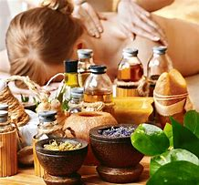

Masajes descontracturantes
 ▼
▼
El masaje descontracturante es una técnica de masaje que busca aliviar y disolver las contracturas musculares. Se realiza con movimientos específicos, que pueden incluir presiones, amasamientos y roces sobre la piel. El objetivo es aliviar el dolor y otros síntomas asociados a la contractura. El masaje descontracturante se puede realizar en diferentes partes del cuerpo, como la espalda, brazos, glúteos y piernas.
Drenaje Linfatico
 ▼
▼
Es un tipo de masaje que busca potenciar el funcionamiento de nuestro sistema linfático, el cual está encargado de eliminar los desechos y toxinas del cuerpo. Durante la sesión de masaje se logra eliminar todos los elementos sobrantes del cuerpo gracias a los movimientos del tejido muscular.Se drenan los líquidos acumulados abriendo las vías linfáticas del cuerpo con los movimientos del masaje. Es una técnica que provoca relajación generalizada en el cuerpo. Al realizar un masaje linfático, es importante que el masaje incluya no sólo el área afectada, por el contrario debe incluir todas las áreas relacionadas con el sistema linfático del cuerpo para drenar adecuadamente.
Reflexologia
 ▼La reflexología consiste en la aplicación de presión en puntos y áreas específicas de los pies, las manos y los oídos del paciente. Estos puntos están directamente correlacionados con órganos del cuerpo y sistemas corporales. Es un masaje muy relajante, especialmente para personas que pasan mucho tiempo de pie o que sufren dolores en esta zona. El alcance es mayor, pues como hemos dicho, los reflexólogos utilizan zonas del pie para tratar órganos, para esto se valen de mapas que utilizan como guía. El pie derecho se corresponde con los órganos ubicados a la derecha del cuerpo y el izquierdo con los órganos en la parte izquierda del cuerpo.
Piedras Calientes
 ▼
▼
Esta es una opción muy interesante, es un masaje donde no se depende exclusivamente de las manos del masajista para tratar los nódulos fibrosos que tanto dolor provocan, en este caso el terapeuta coloca piedras de basalto calientes en determinadas partes del cuerpo para tratar de aliviar las tensiones musculares.La combinación de la terapia con piedras calientes y otras técnicas de masaje ha probado ser muy efectiva para el tratamiento de diversas dolencias musculares. Los usuarios destacan su efecto calmante, el cual es producido por el calor ejercido sobre las zonas doloridas.
Shiatsu
 ▼
▼
Uno de los masajes más populares en los últimos tiempos debido a los grandes beneficios que ofrece esta técnica de origen de japonés. Shiatsu puede ser traducido de manera literal como “presión con los dedos”, y es que para ejecutar este masaje el terapeuta se vale de presiones rítmicas variadas empleando fundamentalmente los dedos de las manos, pero también utilizando los codos, rodillas e incluso los pies.La presión se realiza en los puntos concretos del cuerpo, los conocidos como puntos de acupresión los cuales son importantes para el flujo de energía vital del cuerpo. Estos puntos se suelen masajear por un periodo de 2 a 8 segundos. Este masaje ha ganado mucha popularidad por su efecto relajante ideal para recuperar el equilibrio psicofísico.
Aromaterapia
 ▼La aromaterapia es una técnica natural, la cual consiste en la utilización del aroma y las partículas liberadas por distintos aceites esenciales para estimular diferentes partes del cerebro, ayudando a aliviar los síntomas de ansiedad, insomnio, depresión, asma o resfriado; Promover el bienestar; Aumentar las defensas del organismo. Pese a que son utilizados productos naturales, la aromaterapia debe ser orientada por un profesional especializado, el cual puede indicar cuál es el mejor aceite esencial que se debería utilizar en cada caso.
Masaje sueco
 ▼
▼
Sin lugar a dudas el masaje más conocido y uno de los más efectivos para ofrecer una sensación de relajación completa. Esta técnica podemos decir que es el masaje básico, es considerado un como masaje terapéutico, se caracteriza por movimientos suaves y prolongados intentando “amasar el cuerpo”. Incluye movimientos ligeros, amasado con mociones circulares, pequeños golpecitos rítmicos en las capas superiores de los músculos, etc.
Masaje tailandès
 ▼
▼
El masaje Tailandes o masaje thai está muy de moda últimamente, ha venido experimentando importantes mejoras en sus técnicas para ser cada vez más efectivo. Similar al masaje Shiatsu, el principal objetivo es alinear las energías del cuerpo, para esto el masajista se vale de variadas maniobras, como presión en puntos específicos, compresiones, movilización de articulaciones, acupresión y estiramientos intensos.
Masaje Deportivo
 ▼
▼
Este tipo de masaje está enfocado en tratar los grupos musculares que se ejercitan durante la realización de un deporte en particular. Se realiza antes y después de completar la actividad deportiva, primero para calentar los músculos y luego para aflojar las tensiones. Es muy recomendado por los especialistas para el tratamiento de lesiones durante la fase de rehabilitación.Para disfrutar de este masaje no tienes que ser deportista, muchas personas lo utilizan pues es muy útil para mejorar el rendimiento físico, la flexibilidad y el balance muscular.El masaje deportivo se diferencia de otras terapias en que su objetivo fundamental no es el relajamiento, sino que en este caso la meta está en prevenir y tratar lesiones. Los movimientos que realiza el especialista en las sesiones de este masaje son más largos que en el masaje sueco y se combinan con estiramientos.
Masaje Profundo
 ▼
▼
Como su propio nombre indica, es una técnica pensada para acceder a las capas más profundas del tejido muscular para aliviar tensiones. Podemos decir que es bastante similar al masaje sueco, pero en este caso el terapeuta realiza la técnica de amasado con mayor intensidad. Se caracteriza por el uso de movimientos lentos que se centran en las capas donde se encuentran los músculos, tendones y otros tejidos.
Masaje de puntos desencadenantes
 ▼
▼
Este tipo de masaje persigue un objetivo similar al de tejido profundo, el de disipar la tensión crónica acumulada en la parte interior de los músculos. La diferencia se encuentra en que con esta técnica, el terapeuta se centra en los puntos desencadenantes o puntos gatillo.Este masaje puede ser muy efectivo para aliviar todo tipo de dolores musculares no solo en la espalda sino en casi cualquier región del cuerpo. Puede parecer inicialmente un masaje un poco doloroso pero los especialistas suelen combinarlos con otras técnicas para reducir el dolor y aumentar el bienestar del paciente.
Masaje Kobido
 ▼
▼
«Antiguo camino de la belleza» es el significado de la palabra kobido. Es una terapia que se centra en la musculatura facial y se considera un lifting natural, así como una experiencia neurosensorial basada en movimientos lentos y rápidos.Se tocan 16 músculos y 24 puntos desde el rostro, la cabeza, el maxilar y el cuello. Las maniobras son manuales y de digitopresión.Los resultados serían la eliminación de las arrugas sin necesidad de aplicar otras sustancias, como el bótox. Además, brinda elasticidad y brillo al rostro, debido a que previene la retención de líquidos.